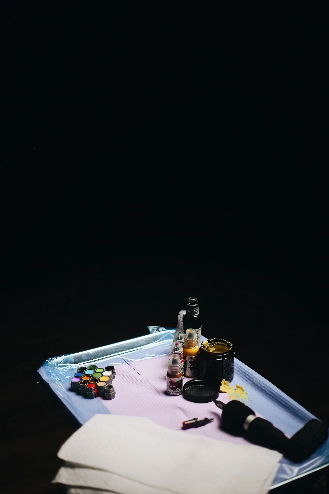

Realisme en portret
Een gezicht dat je dierbaar is, met de diepte en de details die het verdient.
Realistische portretten, volle kleur, een fijne lijn of een sleeve die je verhaal vertelt. Bij Garcia Ink krijg je de rust en de uitleg om er een stuk van te maken waar je elke dag naar kijkt.

“Work so hard that one day your signature will be called an autograph.”
Het motto van de studioElk stuk wordt op maat getekend. Je brengt een foto, een idee of een verhaal mee, de rest bouwen we samen op.
Een gezicht dat je dierbaar is, met de diepte en de details die het verdient.

Grote stukken die over meerdere sessies groeien. Van games en films tot je eigen wereld.

Een eerste tattoo, een datum of een symbool. Netjes gezet, met alle uitleg die je nodig hebt.
Welke dag
Liefst
Waarvoor


Warme lichten, een propere werkplek en iemand die de tijd neemt om alles uit te leggen. Veel klanten komen voor hun eerste tattoo en gaan naar huis met de vraag wanneer de volgende kan.
4,9
uit 66 reviews op Google
98% raadt Garcia Ink aan op FacebookVoor mijn eerste kleine tattoo. Super vriendelijk, goede uitleg en hij stelt je op je gemak. Mooi en proper gezet, exact zoals ik het wou.
Super mooie tattoo. Je voelt je dadelijk op je gemak, hij maakt er echt een kunstwerk van. Zeker een aanrader.

3800 Sint-Truiden
| Maandag | Gesloten |
| Dinsdag | 10u tot 18u |
| Woensdag | 10u tot 18u |
| Donderdag | 10u tot 18u |
| Vrijdag | 10u tot 18u |
| Zaterdag | 10u tot 16u |
| Zondag | Gesloten |
Een scherpe foto met goed licht, liefst in hoge kwaliteit. Hoe meer detail op de foto, hoe meer detail in de tattoo.
Dat hangt af van de grootte en de stijl. Een sleeve wordt meestal over meerdere sessies opgebouwd. We maken samen een planning.
Zeker. Je krijgt alle uitleg vooraf, zodat je weet wat je kan verwachten. Veel klanten komen hier voor hun eerste.
Ja. Kom langs of stuur een bericht, dan zeggen we je wat mogelijk is en hoe je het best verzorgt.
Een eerste schets, op maat van Garcia Ink. Jullie kiezen de stijl, ik zorg dat alles klopt.
één keer, alles inbegrepen
Geen voorschot. Je betaalt pas als de site klaar is.
Hosting en domein op jouw naam. Een aanpassing vraag je per keer aan.
Hosting en domein inbegrepen. Nieuwe acties, verlofdagen en wijzigingen zet ik er voor je op.
mijn aanraderStijn Vranken · 0496 25 14 45 · info@digital-impression.be